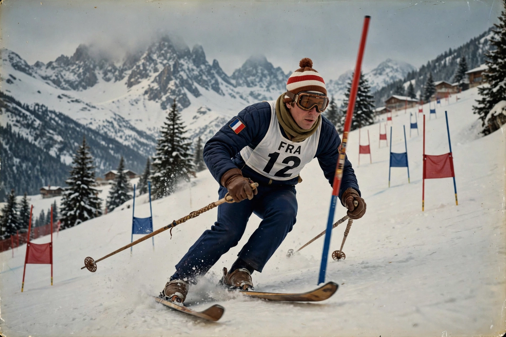

| X Olympic Winter Games | |
|---|---|
 | |
| Host city | Grenoble, France |
| Dates | 6–18 February 1968 |
| Nations | 37 |
| Athletes | 1,158 |
| Events | 35 in 6 sports |
| Opened by | President Charles de Gaulle |
The 1968 Winter Olympics, officially the X Olympic Winter Games, were held from 6 to 18 February 1968 in Grenoble, France. Grenoble was chosen over Calgary, among other bids. The Games were the first Winter Olympics broadcast in colour, and they transformed Grenoble with new highways, an airport, and the Palais des Sports ice venue.
French alpine skier Jean-Claude Killy became the star of the Games, sweeping all three men's alpine events — downhill, giant slalom, and slalom — on home snow. His slalom gold came after the controversial disqualification of Austria's Karl Schranz, who was initially declared the winner before being ruled to have missed a gate. American figure skater Peggy Fleming won the ladies' title, the only U.S. gold of the Games. Norway topped the medal table with six golds, narrowly ahead of the Soviet Union.
East and West Germany competed as separate teams for the first time at a Winter Games. Drug testing and sex testing were introduced at the Olympics for the first time in Grenoble. The unusually warm weather and rain during the bobsleigh and luge events forced delays and shortened runs, and the Games are also remembered for the fog-shrouded, disputed men's slalom.